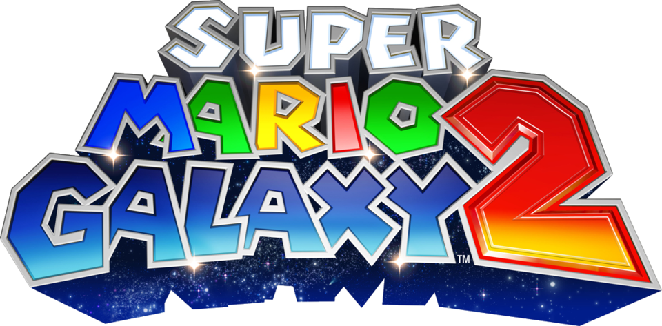
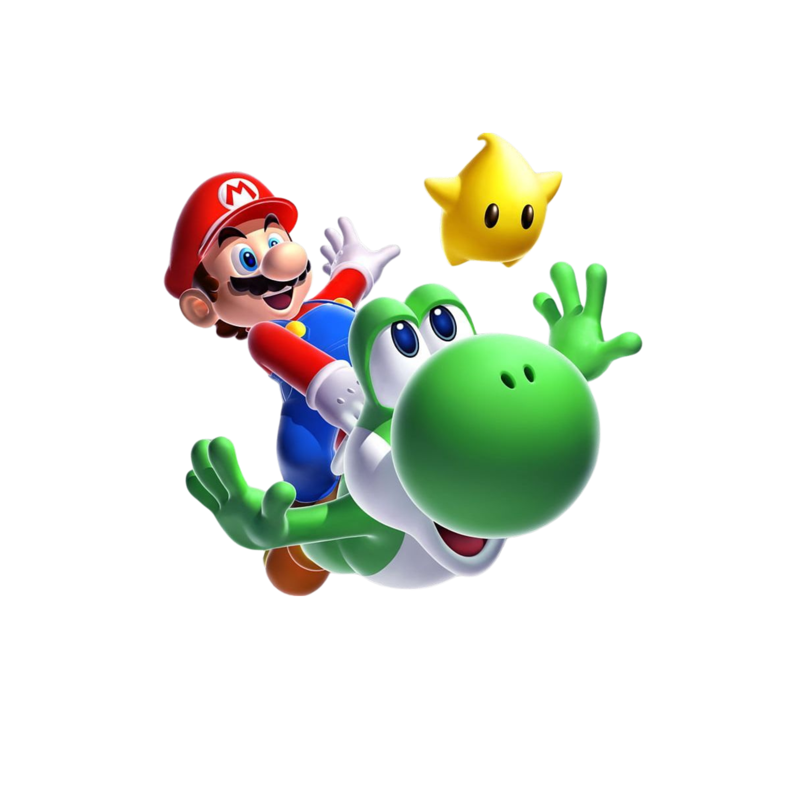

Em Super Mario Galaxy 2, o vilão Bowser retorna gigante e sequestra a Princesa Peach mais uma vez, levando-a para o centro do universo. Mario, acompanhado por uma pequena Luma amigável e posteriormente por Yoshi e Lubba, embarca em uma jornada intergaláctica a bordo da "Starship Mario" para resgatar a princesa, coletando estrelas e explorando diversas galáxias com novos poderes e desafios.